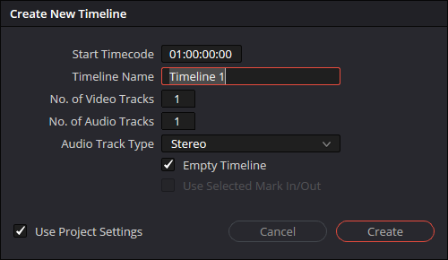

Create a Timeline
Overview
A timeline is a sequence of clips arranged in the editor. Create a timeline for a sequence of clips in your project. Use more than one timeline if you are creating more than one video using the same media, or if your project is very complex.
Procedure: Add a timeline to the Media Pool
- Create a new timeline by doing one of the following:
- Select File > New Timeline
- Select Ctrl + N on your keyboard
- Right-click inside the Media Pool and select Create New Timeline
- Enter a name for your timeline
- Select Create

Procedure: Create a timeline from clips
- Select one or more clips in the Media Pool
- Right-click the selected clip(s)
- Select Create New Timeline Using Selected Clips

Tips
Create timelines from selected clips to quickly build a rough sequence before moving to the Cut Page.
Project: a container for your media, timelines, and editing work.
Clip: a piece of a video or audio file used in a timeline.
Media: video, audio, or image files used in a project.